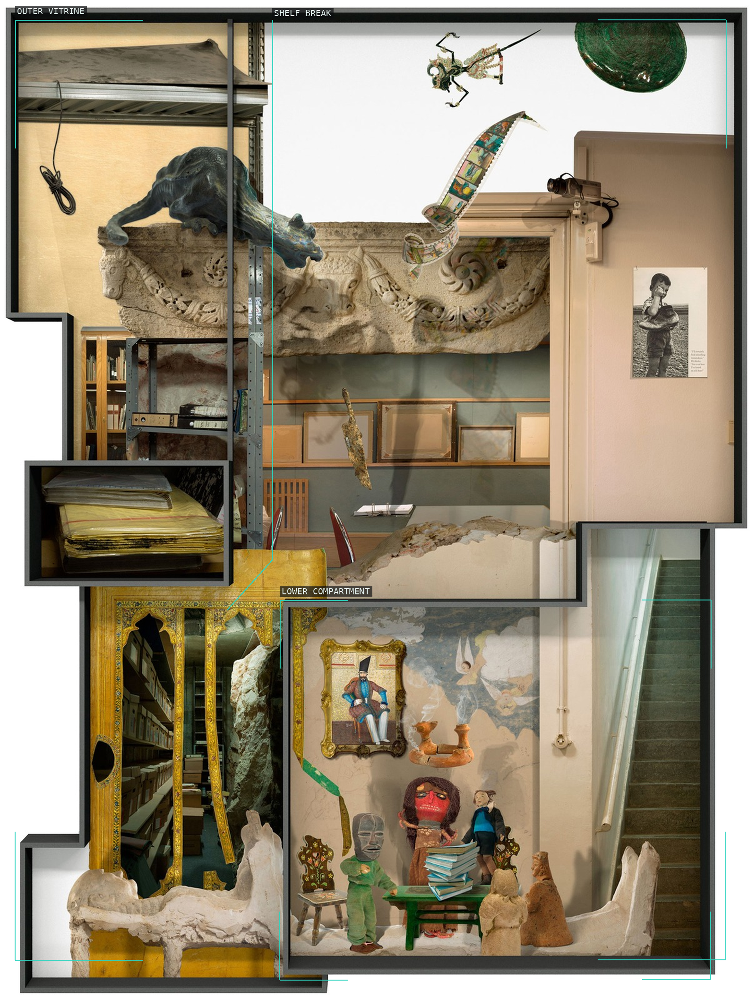
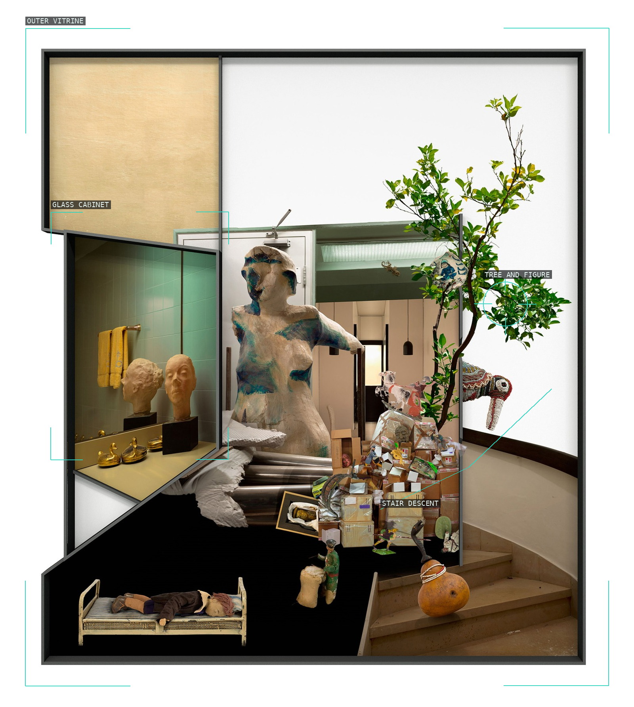
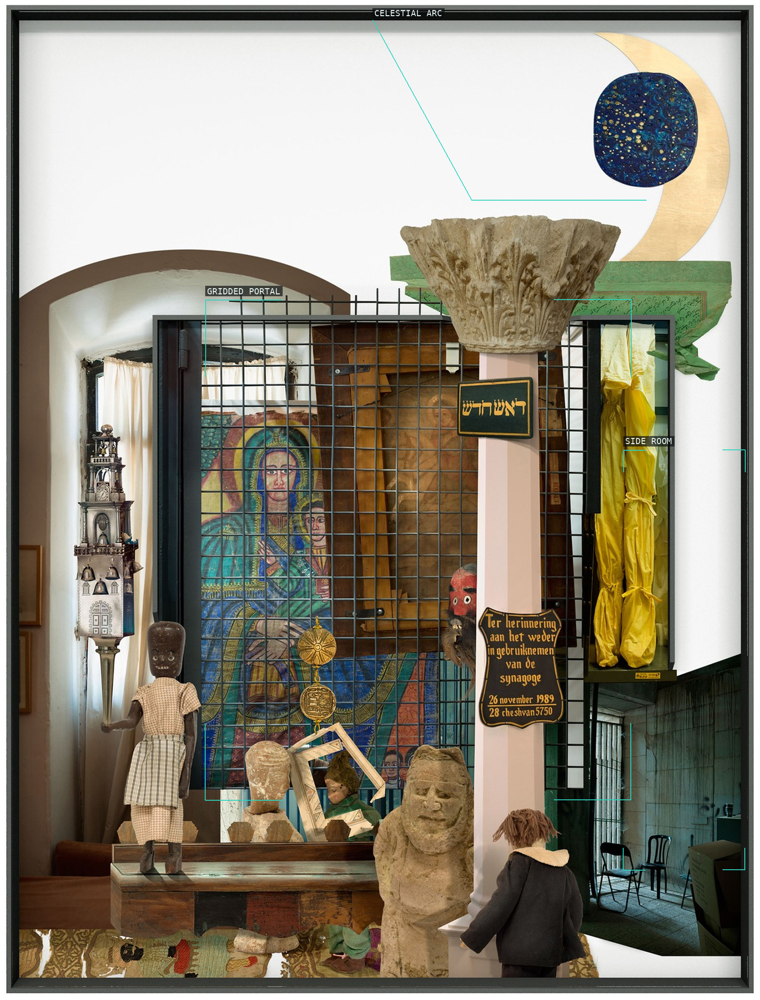
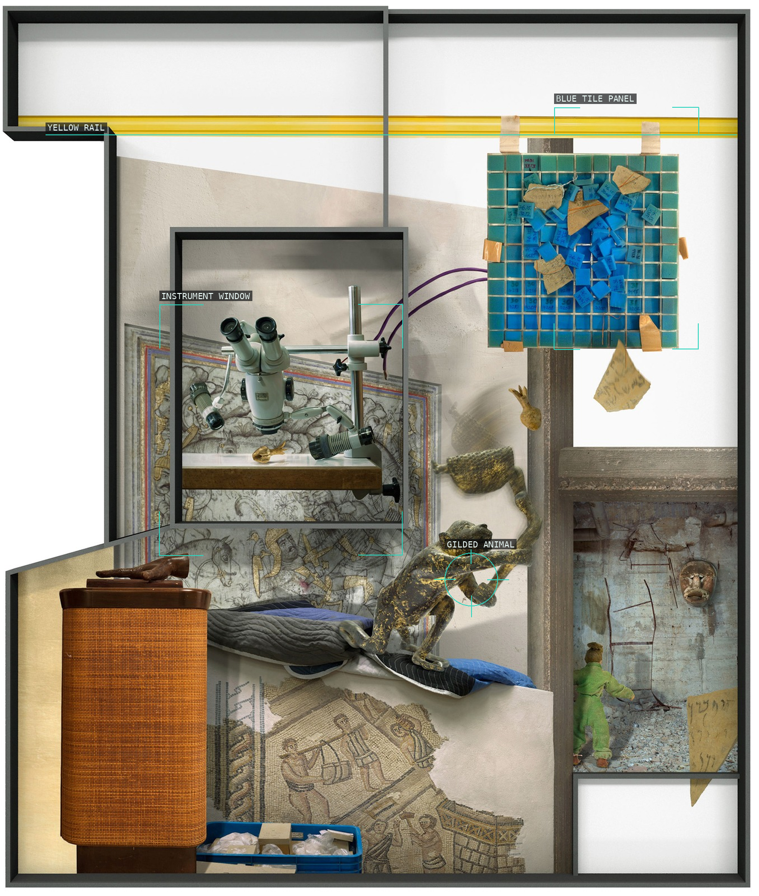
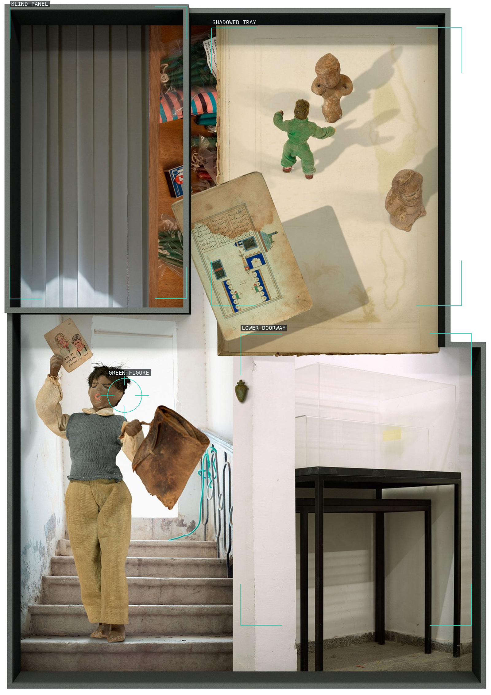
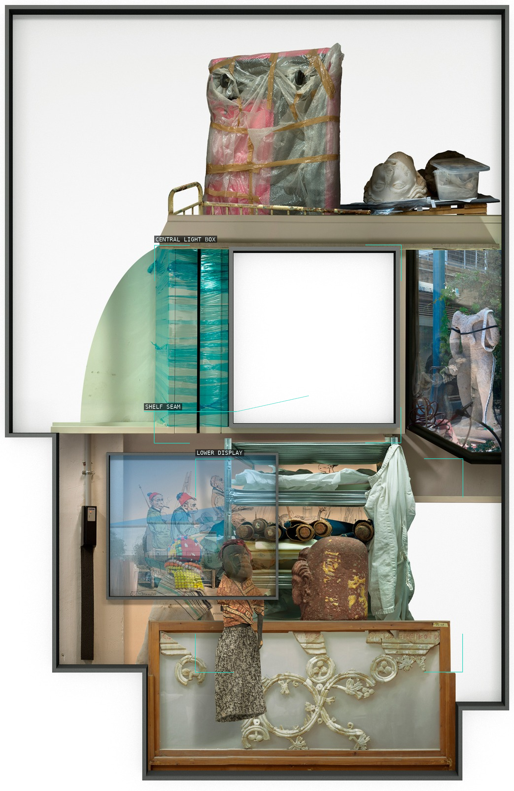
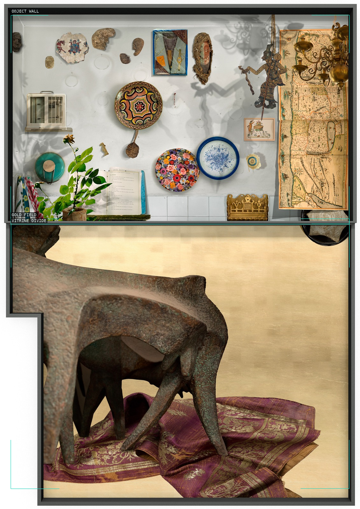
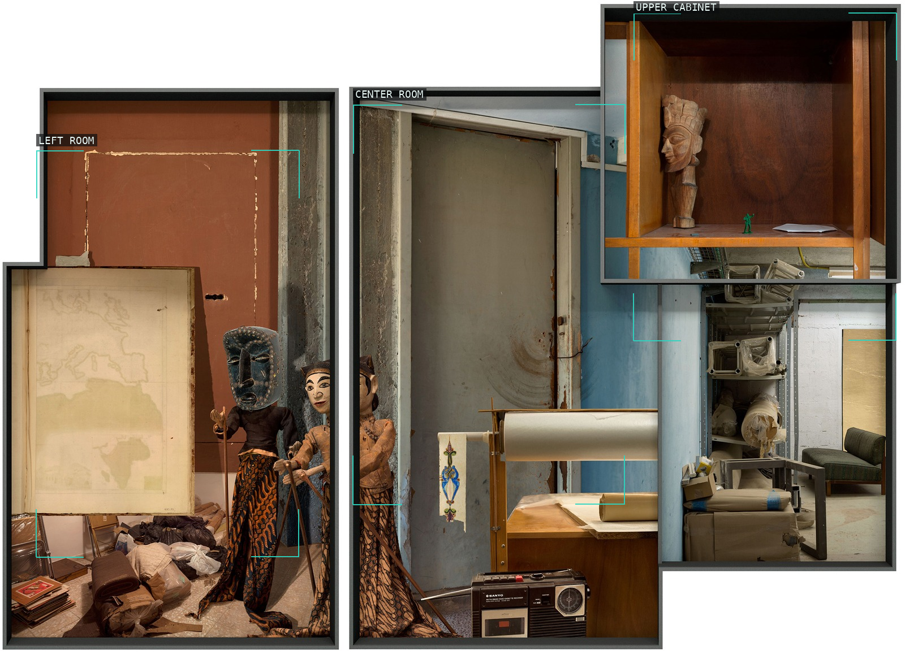
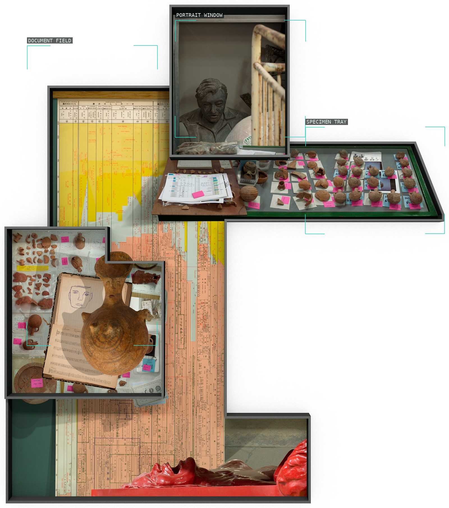
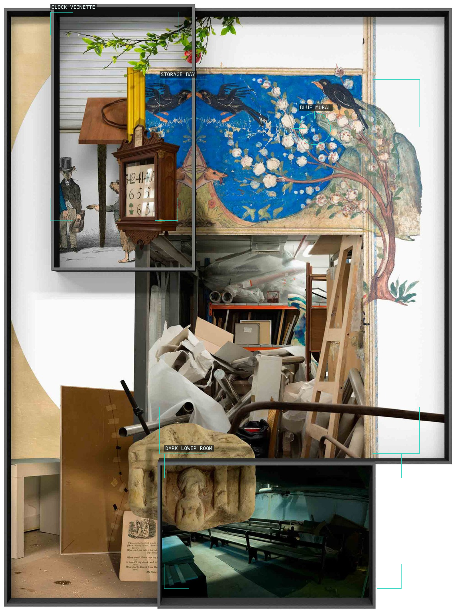

/* ilit-azoulay — proofs */
10 plates. Deterministic overlays rendered by the composition-analysis skill.

01-under-the-surface
Nested cabinet edges.

02-dreamtime
Statue, cabinet, and stair.

03-new-head
Gridded portal and side room.

04-true-story
Rail, tile panel, and instrument window.

05-neither-dream-nor-riddle
Three compartmental clauses.

06-everything-stood-still
Light box and stacked displays.

07-return-of-things
Object wall over gold field.

08-place-they-occupied
Discontinuous rooms.

09-contemplating
Documents, portrait, and specimen tray.

10-glass-storage
Overlapping archive bays.